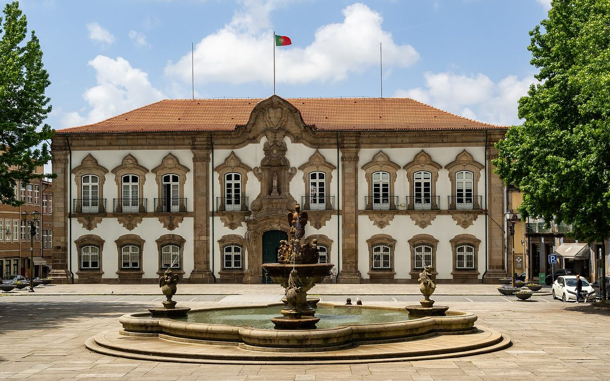

포르투갈 브라가시, 시 건물 30곳 지붕 10년 빌려 주는 자가소비 태양광 공모…검증 뒤 사회단체·취약 가구까지 여는 에너지공동체로

기준가 382만6,920유로, 투자·설치·운영은 낙찰 사업자가 맡고 전기는 시가 받는 위탁 방식…연 2~4.7GWh로 시 시설 전기 소비 7~17% 충당 추산
포르투갈 북부 브라가시가 시 소유 건물 30곳의 지붕과 공간을 민간 사업자에게 일정 기간 내주고 자가소비용 태양광을 설치·운영하게 하는 공개 입찰을 냈다. 입찰 기준가는 부가세를 빼고 382만6,920유로이며, 계약 기간 10년의 공공서비스 위탁 방식이어서 낙찰 사업자가 설비 공급과 설계·설치·운영·감시·유지보수를 맡아 투자비를 대고, 시는 공간을 내주는 대신 생산된 전기를 직접 받는다. 시는 이 설비들이 해마다 2~4.7GWh를 만들어 시 시설 전체 전기 소비의 약 7~17%를 채우고 이산화탄소를 연 132.7~310.94톤 줄일 것으로 내다봤다. 사업은 두 단계로 짜였는데, 처음에는 시 시설끼리만 전기를 나눠 쓰는 집단 자가소비로 운영하고, 작동이 검증되면 사회단체와 취약 계층 주민도 참여하는 재생에너지공동체(CER)로 넓힐 수 있게 했다. 알티누 베사(Altino Bessa) 부시장은 시 시설의 에너지 효율과 기후 대응, 계속 늘어나는 전기요금 부담이 출발점이라며, 쓰는 곳에서 전기를 만들면 송전 손실과 망 투자를 줄이고 지역의 에너지 자립도도 높일 수 있다고 설명했다. 입찰 마감일과 낙찰 여부는 아직 알려지지 않았다.
시민에너지 관점
포르투갈은 2019년 법령으로 집단 자가소비와 재생에너지공동체를 제도에 들였고, 브라가는 그 틀을 시 건물 30곳에 한꺼번에 적용해 흩어진 공공 지붕을 하나의 분산형 발전소로 묶으려 한다. 시 예산 없이 사업자가 투자하니 빠르고 위험이 적다는 장점이 있지만, 10년 동안 설비의 주인은 사업자이고 주민이 들어오는 공동체는 '검증 뒤'라는 조건이 붙은 계획일 뿐이라는 점은 분명히 봐야 한다. 공공 지붕에서 나오는 이익이 지역에 남으려면 위탁 계약 단계부터 취약 가구가 참여하는 시점과 주민·지역 단체가 지분을 갖는 방식을 못 박아 두어야 한다. 국내 지자체도 공공건물 지붕 임대 공모를 낼 때 주민 출자와 에너지 빈곤 가구 몫을 평가 기준에 넣어야 한다.
출처: Edifícios e Energia 2026-11-05 Joana Margarida Fialho 원문 보기
ポルトガル・ブラガ市、市の建物30棟の屋根を10年貸し出す自家消費太陽光の入札…検証後は社会団体・脆弱世帯にも開くエネルギー共同体へ
予定価格382万6,920ユーロ、投資・設置・運営は落札事業者が担い電力は市が受け取る委託方式…年2～4.7GWhで市施設の電力消費の7～17%を賄う見込み
ポルトガル北部のブラガ市が、市有建物30棟の屋根やスペースを一定期間民間事業者に提供し、自家消費用の太陽光発電を設置・運営させる公開入札を実施した。予定価格は付加価値税抜きで382万6,920ユーロ、契約期間10年の公共サービス委託方式で、落札事業者が設備の供給と設計・設置・運営・監視・保守を担って投資費用を負担し、市はスペースを提供する代わりに発電した電力を直接受け取る。市は、これらの設備が年間2～4.7GWhを発電し、市施設全体の電力消費の約7～17%を賄い、二酸化炭素を年132.7～310.94トン削減すると見込んでいる。事業は2段階で、まず市の施設同士だけで電力を分け合う集団自家消費として運営し、機能が検証されれば社会団体や脆弱な立場の住民も参加する再生可能エネルギー共同体（CER）に広げられるようにした。アルティーノ・ベサ（Altino Bessa）副市長は、市施設のエネルギー効率と気候対策、増え続ける電気料金の負担が出発点だとし、使う場所で電気をつくれば送電ロスや系統投資を減らし、地域のエネルギー自立度も高められると説明した。入札の締め切りや落札の有無はまだ明らかになっていない。
市民エネルギーの視点
ポルトガルは2019年の法令で集団自家消費と再生可能エネルギー共同体を制度に取り入れており、ブラガはその枠組みを市の建物30棟に一括で適用し、散らばった公共の屋根を一つの分散型発電所にまとめようとしている。市の予算を使わず事業者が投資するため速くリスクも小さいという利点はあるが、10年間設備の持ち主は事業者であり、住民が加わる共同体は「検証後」という条件付きの計画にすぎない点ははっきり見ておく必要がある。公共の屋根から生まれる利益を地域に残すには、委託契約の段階から脆弱世帯が参加する時期と、住民や地域団体が持ち分を持つ方法を明記しておくべきだ。韓国の自治体も、公共建築の屋根の賃貸公募を行う際には、住民出資とエネルギー貧困世帯の取り分を評価基準に盛り込むべきだ。
出典: Edifícios e Energia 2026-11-05 Joana Margarida Fialho 原文を読む
葡萄牙布拉加市招标出租30栋市属建筑屋顶10年建自用光伏…验证后扩展为向社会团体和弱势家庭开放的能源社区
招标底价382.692万欧元，由中标企业投资、安装和运营，电力归市政府使用的特许方式…预计年发电2至4.7吉瓦时，满足市属设施用电的7%至17%
葡萄牙北部的布拉加市发布公开招标，将30栋市属建筑的屋顶和空间在一定期限内提供给民间企业，由其安装并运营自用光伏设备。招标底价为不含增值税382.692万欧元，采用为期10年的公共服务特许方式：中标企业负责设备供应以及设计、安装、运营、监测和维护，并承担投资；市政府提供空间，直接使用所发电力。市政府预计，这些设备每年可发电2至4.7吉瓦时，满足市属设施总用电量的约7%至17%，每年减少二氧化碳排放132.7至310.94吨。项目分两个阶段：先以只在市属设施之间分享电力的集体自用模式运行，待运行得到验证后，可扩展为社会团体和处境困难的居民也能参与的可再生能源社区（CER）。副市长阿尔蒂诺·贝萨（Altino Bessa）表示，项目的出发点是提高市属设施能效、应对气候变化以及不断加重的电费负担；在用电地点发电，可以减少输电损耗和电网投资，并提高本地能源自给率。招标截止日期和中标情况尚未公布。
市民能源视角
葡萄牙在2019年通过法令把集体自用和可再生能源社区纳入制度，布拉加则把这一框架一次性用到30栋市属建筑上，试图把分散的公共屋顶连成一座分布式电站。市政府不出预算、由企业投资，速度快、风险小，这是优点；但必须看清，10年间设备的主人是企业，而让居民加入的社区只是附有“验证之后”条件的计划。要让公共屋顶产生的收益留在当地，就应在特许合同阶段写明弱势家庭何时参与、居民和本地团体以何种方式持股。韩国地方政府在招标出租公共建筑屋顶时，也应把居民出资和能源贫困家庭的份额纳入评分标准。
来源: Edifícios e Energia 2026-11-05 Joana Margarida Fialho 查看原文
Portugal's Braga tenders 10-year use of 30 municipal roofs for self-consumption solar, with plans to open it later as an energy community for social organisations and vulnerable households
Base price of 3,826,920 euros under a concession in which the winning operator invests, installs and runs the systems while the city takes the power; estimated 2-4.7 GWh a year, covering 7-17% of municipal electricity use
The city of Braga in northern Portugal has launched a public tender to let a private operator use the roofs and other spaces of 30 municipal buildings for a set period to install and run solar systems for self-consumption. The tender has a base price of 3,826,920 euros excluding VAT and takes the form of a 10-year public service concession: the winning bidder supplies the equipment, handles design, installation, operation, monitoring and maintenance and carries the investment, while the city provides the space and receives the electricity directly. The city expects the systems to produce 2 to 4.7 GWh a year, covering about 7% to 17% of total electricity use in municipal facilities and avoiding 132.7 to 310.94 tonnes of carbon dioxide annually. The project is planned in two phases: it will first run as collective self-consumption shared only among municipal facilities, and once it has been validated it could be widened into a renewable energy community (CER) that also brings in social organisations and residents in vulnerable situations. Deputy mayor Altino Bessa said the starting points were energy efficiency in municipal buildings, climate action and the growing burden of power bills, adding that generating electricity where it is used cuts transmission losses and grid investment and raises the area's energy self-sufficiency. The tender's closing date and outcome have not yet been made public.
Citizen Energy View
Portugal brought collective self-consumption and renewable energy communities into law with a 2019 decree, and Braga is applying that framework to 30 municipal buildings at once, tying scattered public roofs together into a single distributed power plant. Having an operator invest instead of the city budget is fast and low-risk, but it should be clear that for ten years the systems belong to the operator, and the community that would let residents in is only a plan conditional on "validation". If the gains from public roofs are to stay local, the concession contract itself should fix when vulnerable households join and how residents and local groups can hold a stake. Korean local governments, too, should make resident investment and a share for energy-poor households part of the scoring when they tender out public roofs.
Source: Edifícios e Energia 2026-11-05 Joana Margarida Fialho Read the original